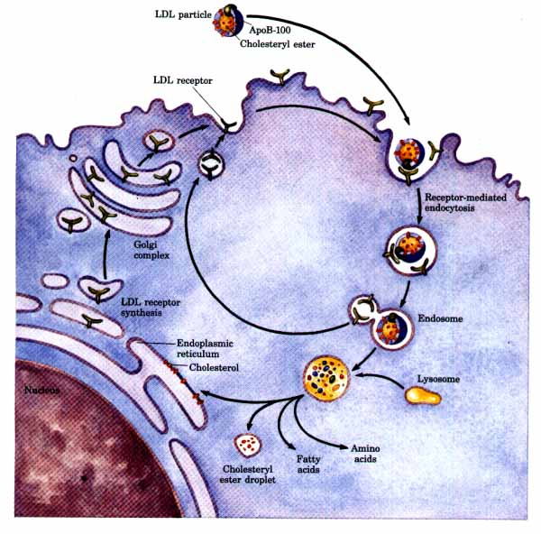
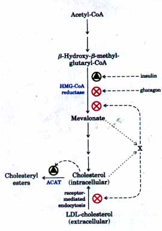
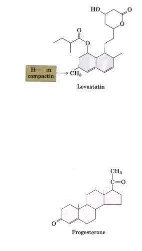
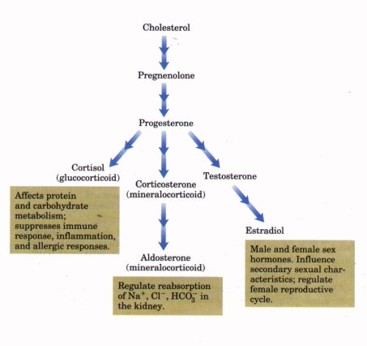
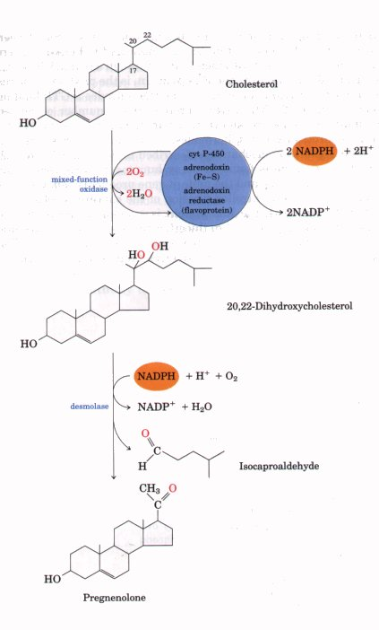
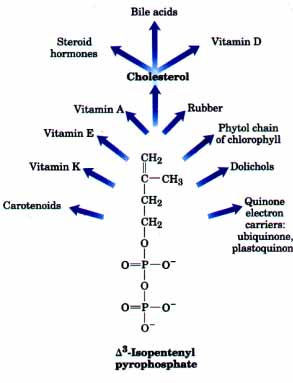
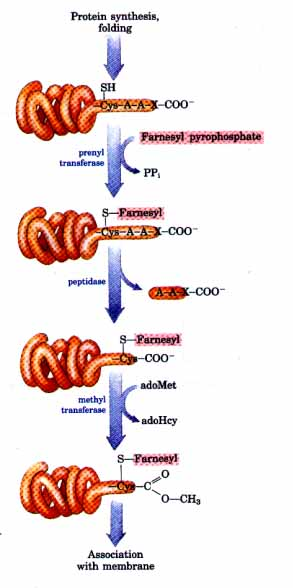

Each LDL particle circulating in the bloodstream contains apoB-100, which as noted above is recognized by specific surface receptor proteins, LDL receptors, on cells that need to take up cholesterol. The binding of LDL to an LDL receptor initiates endocytosis (see Fig. 210), which brings the LDL and its associated receptor into the cell within an endosome (Fig. 20-39). This endosome eventually fuses with a lysosome, which contains enzymes that hydrolyze the cholesteryl esters, releasing cholesterol and fatty acid into the cytosol. The apoB-100 of LDL is also degraded to amino acids, which are released to the cytosol, but the LDL receptor escapes degradation and returns to the cell surface, where it can again function in LDL uptake. This pathway for the transport of cholesterol in blood and its receptor-mediated endocytosis by target tissues was elucidated by Michael Brown and Joseph Goldstein.
Cholesterol entering cells by this path may be incorporated into membranes or may be reesterified by ACAT (Fig. 20-36) for storage within cytosolic lipid droplets. The accumulation of excess intracellular cholesterol is prevented by reducing the rate of cholesterol synthesis when sufficient cholesterol is available from LDL in the blood.

Figure 20-39 Uptake of cholesterol by receptormediated endocytosis. Endocytosis is also described in Chapter 2 (p. 32).
Cholesterol Biosynthesis Is Regulated by Several FactorsCholesterol synthesis is a complex and energy-expensive process, and it is clearly advantageous to an organism to be able to regulate the synthesis of cholesterol so as to complement the intake of cholesterol in the diet. In mammals, cholesterol production is regulated by intracellular cholesterol concentration and by the hormones glucagon and insulin. The rate-limiting step in the pathway to cholesterol is the conversion of (3-hydroxy-(3-methylglutaryl-CoA (HMG-CoA) into mevalonate (Fig. 20-32), and the enzyme that catalyzes this reaction, HMG-CoA reductase, is a complex regulatory enzyme whose activity is modulated over a 100-fold range. It is allosterically inhibited by as yet unidentified derivatives of cholesterol and of the key intermediate mevalonate (Fig. 20-40). HMG-CoA reductase is also hormonally regulated. The enzyme exists in phosphorylated (inactive) and dephosphorylated (active) forms. Glucagon stimulates phosphorylation (inactivation), and insulin promotes dephosphorylation, activating the enzyme and favoring cholesterol synthesis. In addition to its immediate inhibition of existing HMG-CoA reductase, high intracellular cholesterol also slows the synthesis of new molecules of the enzyme. Furthermore, high intracellular concentrations of cholesterol also activate ACAT (Fig. 20-40), increasing esterification of cholesterol for storage. Finally, high intracellular cholesterol causes reduced production of the LDL receptor, slowing the uptake of cholesterol from the blood. Unregulated cholesterol production can lead to serious disease. When the sum of the cholesterol synthesized and obtained in the diet exceeds the amount required for the synthesis of membranes, bile salts, and steroids, pathological accumulations of cholesterol in blood vessels (atherosclerotic plaques) can develop in humans, resulting in obstruction of blood vessels (atherosclerosis). Heart failure from occluded coronary arteries is a leading cause of death in industrialized societies. Atherosclerosis is linked to high levels of cholesterol in the blood, and particularly to high levels of LDL-bound cholesterol; there is a neg'atiue correlation between HDL levels and arterial disease. |
 Figure 20-40 Regulation of cholesterol biosynthesis balances synthesis with dietary uptake. Glucagon acts by promoting phosphorylation of HMGCoA reductase, insulin by promoting dephosphorylation. X represents unidentified metabolites of cholesterol and mevalonate, or other unidentified second messengers. |
In the human genetic disease known as
familial hypercholesterolemia, blood levels of
cholesterol are extremely high, and afflicted individuals
develop severe atherosclerosis in childhood. The LDL
receptor is defective in these individuals, and the
receptor-mediated uptake of cholesterol carried by LDL
does not occur. Consequently, cholesterol obtained in the
diet is not cleared from the blood; it accumulates and
contributes to the formation of atherosclerotic plaques.
Endogenouscholesterol synthesis continues even in the
presence of excessive cholesterol in the blood, because
the extracellular cholesterol cannot enter the cytosol to
regulate intracellular synthesis. Two natural products
derived from fungi, lovastatin and compactin,
have shown promise in treating patients with familial
hypercholesterolemia. Both are competitive inhibitors of
HMG-CoA reductase and thus inhibit cholesterol synthesis.
Lovastatin treatment lowers serum cholesterol by as much
as 30% in individuals who carry one copy of the gene for
familial hypercholesterolemia. When combined with an
edible resin that binds bile acids and prevents their
reabsorption from the intestine, the drug is even more
effective.Steroid Hormones Are Formed by Side Chain Cleavage and OxidationAll steroid hormones in humans are derived from cholesterol (Fig. 2041). Two classes of steroid hormones are synthesized in the cortex of the adrenal gland: mineralocorticoids, which control the reabsorption of inorganic ions (Na+, Cl-, and HCO3-- ) by the kidney, and glucocorticoids, which help regulate gluconeogenesis and also reduce the inflammatory response. The sex hormones are produced in male and female gonads and the placenta. They include androgens (e.g., testosterone) and estrogens (e.g., estradiol), which influence the development of secondary sexual characteristics in males and females, respectively, and progesterone, which regulates the reproductive cycle in females. The steroid hormones are effective at very low concentrations, and they are therefore synthesized in relatively small quantities. In comparison with the bile salts, their production consumes relatively little cholesterol. The synthesis of these hormones requires removal of some or all of the carbons in the "side chain" that projects from C-17 of the D ring of cholesterol. Side chain removal takes place in the mitochondria of tissues that make steroid hormones. It involves first the hydroxylation of two adjacent carbons in the side chain (C-20 and C-22) then cleavage of the bond between them (Fig. 20-42). Formation of the individual hormones also involves the introduction of oxygen atoms. All of the hydroxylation and oxygenation reactions in steroid biosynthesis are catalyzed by mixed-function oxidases (Box 20-1) that use NADPH, O2, and mitochondrial cytochrome P-450. |

 Figure 20-41 Some steroid hormones derived from cholesterol. The structures of some these compounds are shown in Fig. 9-15.  Figure 20-42 Side chain cleavage in the synthesis of steroid hormones involves oxidation of adjacent carbons. Cytochrome P-450 acts as electron carrier in this mixed-function oxidase system, which also requires the electron-transferring proteins adrenodoxin and adrenodoxin reductase. This side chain-cleaving system is found in mitochondria of the adrenal cortex, where active steroid production occurs. Pregnenolone is the precursor of all other steroid hormones (see Fig. 20-41). |
Intermediates in Cholesterol Biosynthesis Have Many Alternative FatesIn addition to its role as an intermediate in cholesterol biosynthesis, isopentenyl pyrophosphate is the activated precursor of a huge array of biomolecules with diverse biological roles (Fig. 20-43). They include vitamins A, E, and K; plant pigments such as carotene and the phytol chain of chlorophyll; natural rubber; many essential oils, such as the fragrant principles of lemon oil, eucalyptus, and musk; insect juvenile hormone, which controls metamorphosis; dolichols, which serve as lipid-soluble carriers in complex polysaccharide synthesis; and ubiquinone and plastoquinone, electron carriers in mitochondria and chloroplasts. A remarkable role for isoprenyl intermediates has recently been discovered in studies of a protein that is implicated in human cancers and is known to associate with membranes through a covalently bound isoprenyl lipid. This protein, the Ras protein, is the product of the ras gene, a mutant version of a normal gene that encodes a GTP-binding protein (Chapter 22). The normal protein and a number of related GTP-binding proteins are known to act in signal transductions triggered by neurotransmitters, hormones, growth factors, and other extracellular signals, by mechanisms described in detail in Chapter 22. The mutant ras gene is found in many humans with cancers of the lung, colon, or pancreas, and the mutant gene product is believed to be responsible for the uncontrolled division of the cancerous cells. After its synthesis, the Ras protein is covalently altered by the attachment of farnesyl alcohol in thioether linkage with a Cys residue located four residues from the carboxyl terminus of the protein (Fig. 20-44). The farnesyl donor in this prenylation reaction is farnesyl pyrophosphate (Fig. 20-34). When prenylation is prevented, the ras gene product does not cause uncontrolled cell division; the cancercausing activity of the Ras protein depends on the presence of the farnesyl group. It appears that the prenylation somehow targets the Ras protein for association with the plasma membrane and that without this association the protein does not function. |
 Figure 20-43 An overview of isoprenoid biosynthesis. The structures of most of the end products shown here are given in Chapter 9.  Figure 20-44 Prenylation of proteins leads to membrane association. Protein targeted for prenylation has a carboxyl-terminal sequence of Cys-A-AX, where A is an aliphatic amino acid residue and X is the carboxyl terminus. If X is Ser, Met, or Gln, the protein will be farnesylated; if X is Leu, a geranylgeranyl group is attached. After prenylation, the three terminal residues are cleaved and the new carboxyl-terminal Cys is methylated, with S-adenosylmethionine as the methyl donor. |
Other proteins also undergo prenylation; a number of proteins in humans and a variety of other organisms have covalently attached isoprenyl derivatives that earmark them for membrane association. In some of these, the attached lipid is the 15-carbon farnesyl group; others have the 20-carbon geranylgeranyl group. Different enzymes attach the two types of lipids, and it is possible that the prenylation reactions target proteins to different membranes, depending upon which lipid is attached. Clearly, specific inhibitors of the prenylation of the Ras protein would be of interest as possible therapeutic agents for cancers caused by mutation in the ras gene. These protein prenylation reactions represent another important role for the isoprene derivatives formed on the pathway to cholesterol.